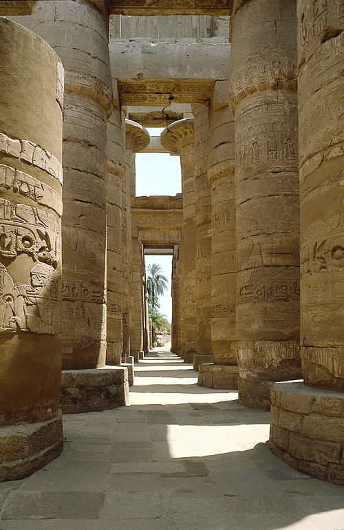

Amenhotep III
<<<<<<< HEAD
Xerxes I the Great, the successor of Darius I, was one of the most widely remembered ancient kings. He made Amestris, daughter of Otanes, his wife, and fathered Amytis, Artaxerxes I, Darius, Hystaspes, Achaemenes, and Rhodogune. And by continuing the Persian Wars started by his father, Darius I, Xerxes forever immortalized himself for both his victories, and ultimately, his failure. But to better understand the god-king, one must understand his past.
Early Life
Xerxes’ father and mother were Darius I and Atossa, daughter of Cyrus the Great, respectively. When a revolt in Egypt erupted, his father Darius was forced to prepare his tomb and appoint Xerxes as his successor before setting out on the expedition. The incident was known as the Ionian Revolt, and involved the burning of the Persian city of Sardis, provoking Darius into beginning the Persian Wars. After Darius’ death in 486 BCE, Artabazanes, the eldest son of Darius, claimed the crown, as it was the established tradition for the eldest to succeed. However, Xerxes claimed the crown due to the fact he was the son of Atossa, the daughter of Cyrus, and since Cyrus had won the Persians their freedom, he should be the rightful ruler. Some scholars believe this is why Xerxes was given the throne, although another theory postulates that although Artabazanes was the eldest son, he was born before Darius became king, therefore making Xerxes the eldest in terms of royalty.
Xerxes was officially crowned king of Persia in late 486 BCE, when he was approximately 36 years old. Due to the great authority of his mother Atossa, the transition of power went unchallenged by anyone in the court or the Achaemenian family, allowing him to immediately crush revolts in Egypt and Babylon. After dealing with the insurgencies, he appointed his brother Achaemenes as satrap of Egypt. Soon after, in 484 BCE, he provoked the Babylonians by forcibly taking and destroying their golden statue of Marduk, a terrible offense to the Babylonians, whose king was mandated by tradition to clasp the hands of the statue each New Year’s Day. This outrage led to a Babylonian rebellion, in which Xerxes was no longer referred to as the king of Babylon in any of their documents from then on.
Start of the Persian Wars
Xerxes most important endeavors occurred during the Persian Wars, when he resumed the battles after a few years of mourning his father. Xerxes began his efforts by attempting to constrict a bridge across the Hellespont, the results of which were later known as Xerxes’ Pontoon Bridges. According to accounts from the Greek Herodotus, Xerxes’ first bridge failed, as it was destroyed in a storm. In a fit of anger, he ordered his men to whip the river itself three hundred times.  Coincidentally, his next attempt succeeded without incident. Xerxes then ended an alliance with Carthage, depriving Greece help from the nations of Syracuse and Agrigentum. Not only did the Greeks suffer from that, smaller Greek states joined the Persians, namely Thessaly, Thebes, and Argos.
Coincidentally, his next attempt succeeded without incident. Xerxes then ended an alliance with Carthage, depriving Greece help from the nations of Syracuse and Agrigentum. Not only did the Greeks suffer from that, smaller Greek states joined the Persians, namely Thessaly, Thebes, and Argos.
In the spring of 480 BCE, Xerxes started towards Greece from Sardis with a fleet and army, estimated to be nearly one million strong by Herodotus, and supposedly included 10,000 elite warriors known as the Persian Immortals. Modern estimations of Xerxes’ forces put them at around 60,000 soldiers, as the rough and arid terrain of the battlefields could not have supported such a large number of fighters.
Battles of the Persian Wars
The first battle that Xerxes oversaw was the Battle of Thermopylae, arguably the most famous of all the battles in the Persian Wars. The battle was fought by the massive Persian forces and a comparatively tiny force of three hundred Greek Spartans, and their king Leonidas. The Spartans initially held off the Persians by funneling them through a narrow corridor, but were ultimately defeated when the Persians were informed of a pass through the mountains by the Greek Ephialtes. After the victory at Thermopylae, Xerxes captured the city of Athens, and burnt it down, according to Herodotus.

After dealing with Athens, Xerxes made a foolish mistake by sending his fleet to attack the Greeks under unfavorable conditions, instead of waiting for the dissolution of the Greek forces. This was what the Greek general Themistocles had wanted, and this pushed the Persians into a battle that they weren’t prepared for. Thus began the Battle of Salamis, in September, 480 BCE. The Persian ships sailed into the Straits of Salamis, attempting to block the entrances. Due to their large numbers, however, the Persians didn’t have enough space to maneuver, and were promptly defeated. After losing when he expected a decisive victory, Xerxes retreated to Asia with a large portion of his army, leaving his commander Mardonius to finish the war. At around the same time, civil unrest began in Babylon, forcing Xerxes to send his army home to prevent a revolt, and with so few soldiers, Mardonius was defeated the following year at the battle of Plataea. After the Battle of Plataea started, but before its end, the Battle of Mycale occurred when the Greeks attacked and destroyed the remaining Persian fleet anchored at the location. Soon after, the Plataea concluded with a Persian loss, and the Persian Wars ended.
Later Life
After his failures in Greece, Xerxes returned home to oversee the completion of many projects that his father never finished. These included the Gate of All Nations and the Hall of a Hundred Columns at Persepolis, which were the most impressive features of the entire palace. Xerxes also completed the Apadana (a large audience hall), the Palace of Darius, and the Treasury, all works that were originally started by Darius I. Xerxes even had a palace twice the size of his father’s constructed, and completed the Susa gate. Xerxes’ taste for architecture closely resembled that of Darius, only on a grander scale, made evident by the massive palaces he had constructed in many major cities.

In 465 BCE, Xerxes’ reign was cut short when he was murdered by Artabanus, the commander of the royal bodyguard and, at the time, the most powerful man in all the Persian court. There are two accounts of the subsequent events, however. One claims that Artabanus killed Xerxes, then accused Xerxes’ eldest son Darius of the murder, and persuaded Xerxes’ other son Artaxerxes to avenge his father. Another account, by Aristotle, claims that Artabanus killed Darius, then Xerxes, and then he and his sons were killed by Artaxerxes. No matter which report is true, the Achaemenids continued to keep power over the throne with the help of Persian General Megabyzus.
=======Amenhotep III, the ninth pharaoh of the Eighteenth Dynasty was arguably the greatest of the Egyptian Pharaohs. His forty-year reign brought about an unprecedented period of prosperity and stability, and brought Egypt to the height of its power in a veritable golden age. By using diplomacy and friendship, tactics hitherto unseen in any ancient correspondence, Amenhotep III was able to control his fellow rulers in the Near East with gold instead of bronze.

General Reign
Amenhotep III was born around 1388 BCE, to Thutmose IV and Queen Mutemwiya. He was crowned pharaoh when he was but a child, most likely between the ages of 6 and 12. As a child is not fit to rule, a regent acted for him until he was old enough to take the helm as pharaoh. Two years after his coronation he was married to Tiye, the daughter of the powerful nobles Yuya and Tuya, who became his queen and chief wife. Later on in his reign he fathered two sons: Thutmose and Amenhotep IV, the former of which died was planned to succeed him but died young. He also fathered four daughters: Sitamun, Henuttanem, Isis, and Nebetah. During the last decade of his rule, Amenhotep III declared Sitamun and Isis as great royal wives.

Amenhotep III’s reign was one of the most peaceful times in Egypt, as there is only one recorded military activity under his rule. Near Aswan and Sai Island in Nubia are three stelas which commemorate his victory with the exaggeration typically used by pharaohs. The stelas tell of how Amenhotep crushed a rebellion at Kush, arriving like a falcon and demolishing his enemies with the ferocity of a lion. While the actual battle was undoubtedly nowhere near as glorious as he made it out to be, propaganda like the stelas greatly increased his popularity and allowed him to maintain control of his empire.
Diplomatic Achievements
The reign of Amenhotep III was a golden age for Egypt, in every sense of the term. Preserved correspondences, known as the Amarna Letters, between him and other rulers document how he would give gold and gifts to them, and would receive gifts in kind. The clay tablets archive the diplomatic talks between Amenhotep and the kings of nearby Assyria, Mitanni, Babylon, and Hatti, and are even more distinctive in that they were written in Akkadian cuneiform as opposed to Egyptian hieroglyphics. The most famous of the Amarna letters is a correspondence between Amenhotep III and the Babylonian king Kadashman-Enlil I, in which the Egyptian Pharaoh refused to allow any Egyptian woman to marry a foreign king, even though Amenhotep III himself married many daughters of the nearby kings. This refusal by Amenhotep was most likely due to the fact that if any princess of his married an outsider, there would be claims to his throne, and such an event would disturb his carefully crafted equilibrium.
Monuments and Temples
Amenhotep III is special in that he has the most surviving statues of any Egyptian pharaoh, with over 250 of his statues having been discovered to date. His reign is also marked with a series of over 200 ceremonial stone scarabs that have been found from Syria to Nubia. The scarabs extolled his accomplishments and acted as the first newspaper system in history. Many of the scarabs tell of the countless lions Amenhotep III slew in order to elevate his greatness, others would state which foreign princess he would marry, and even others record the creation of an artificial lake he built just for his chief wife, Queen Tiye.
Amenhotep also built many monuments, particularly at the Temple of Karnak. There he created the third pylon of the Temple of Karnak, and at modern Luxor he created the Temple of Amun. The temple consisted of two pylons, structures made of two tapering towers connected by an elevated entrance, and included reliefs depicting the birth of Amenhotep III directly from the god Amun. The reliefs legitimized his sovereignty, proclaiming that he truly was the descendant of a god and had the right to rule. Amenhotep also built a new temple for the goddess Ma’at, and later broke down the fourth pylon of the Temple of Amun in order to create a pylon within another temple, a common practice for pharaohs. Amenhotep initiated the construction of the Hypostyle hall, which had reliefs depicting his coronation by the gods. Before his death, he had a massive mortuary temple constructed on the west bank of the Nile, and it was the largest religious complex in Thebes at the time. However, the complex was too close to the floodplain and was reduced to ruins within two centuries, and future pharaohs repurposed much of its masonry for other projects. The Colossi of Memnon, two eighteen meter high statues of Amenhotep, guarded the entrance to his temple, and are the only parts of the temple that haven’t been destroyed.
Later Life
During his later years, and early into the reign of his son Akhenaten, Amenhotep III likely shared power with him in a co-regency. Although the co-regency is merely a theory currently postulated by historians, evidence is found in a letter from the nearby Mitannian king during Akhenaten’s reign, in which the king complains to Amenhotep that Akhenaten did not pay the dowry for his daughter. In addition, evidence from the tomb of a Vizier known as Amenhotep-Huy further confirms that Amenhotep III shared power with his son, at least for a short time. Closer to his death, Amenhotep was believed to have been very weak and plagued by arthritis. Art inside the temple of Soleb in Nubia depict Amenhotep as visibly sick, and Amenhotep even requested a statue of Ishtar, a healing goddess, from his father in law in Mitanni. However, around that time Amenhotep was marrying another wife, and so some speculate that the statue was brought in for the wedding ceremony.
Upon his death, Amenhotep III was buried in the Western Valley of the Valley of the Kings, and sometime during the Third Intermediate Period his body was moved into a side chamber with several other pharaohs. When he died, he left Egypt in the height of its power, but intimately tied to traditional values. Because of this, when his son Akhenaten eventually made his radical changes, the country was shaken to its core. Amenhotep III’s reign cemented Egypt as the regional superpower, and ushered in an age of peace and prosperity. He truly was one of the great pharaohs of ancient Egypt.
>>>>>>> e26ea626b4dc8dab70df78f7f3c096775c1fe9c0